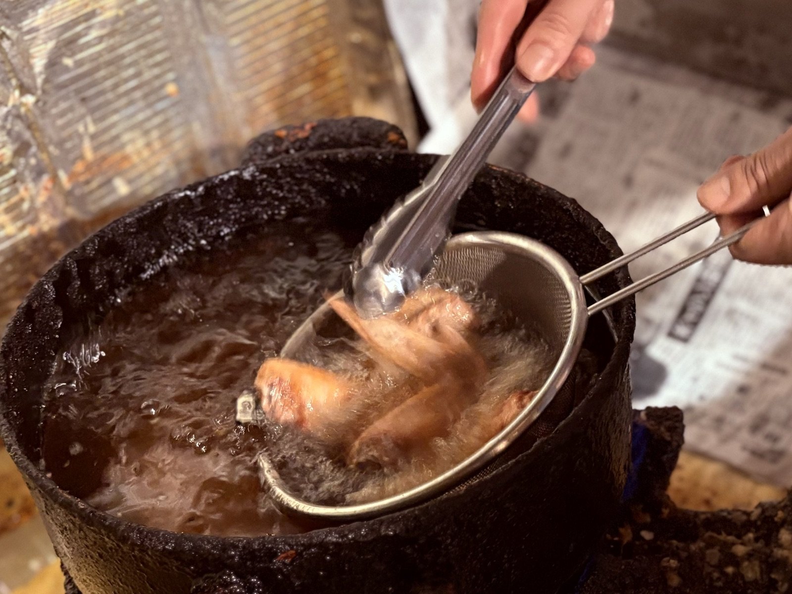
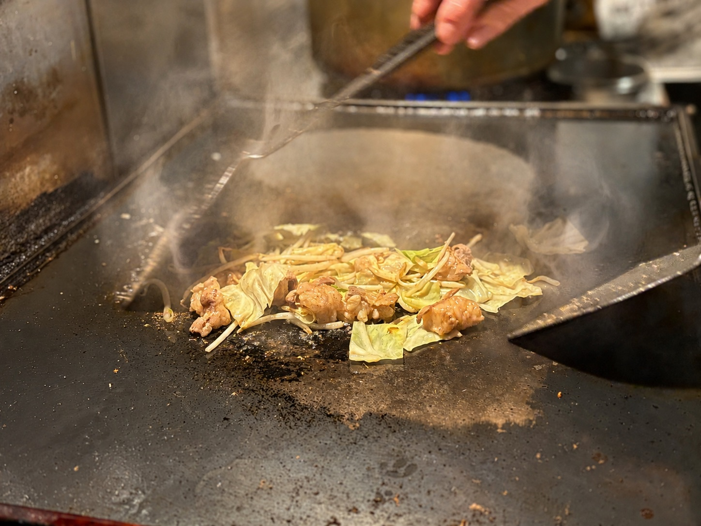
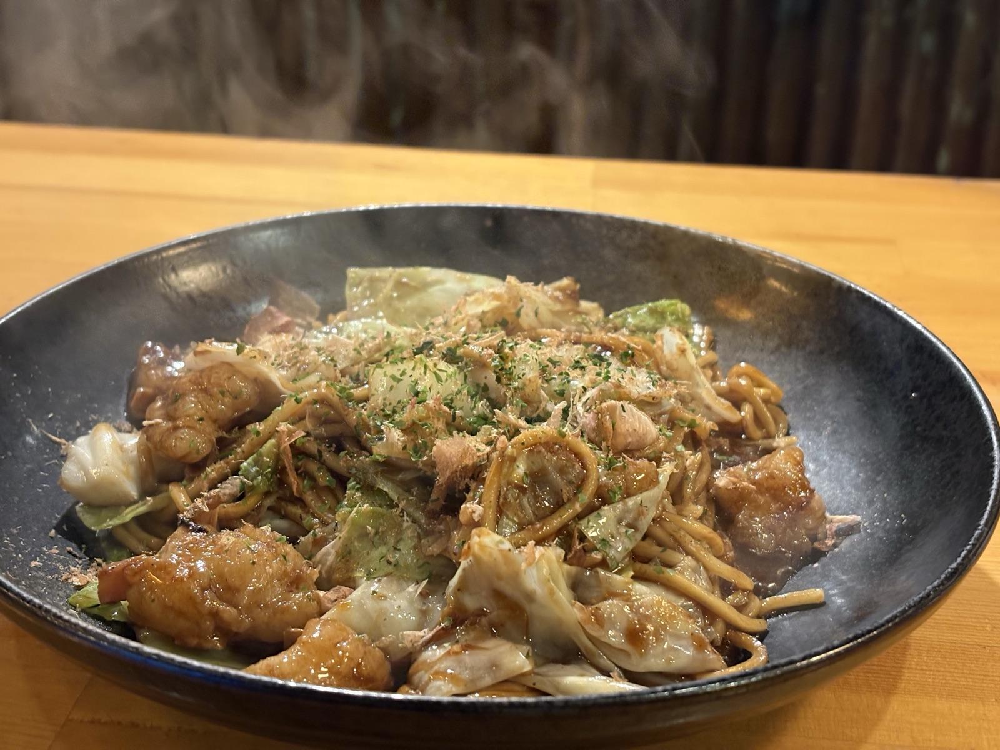
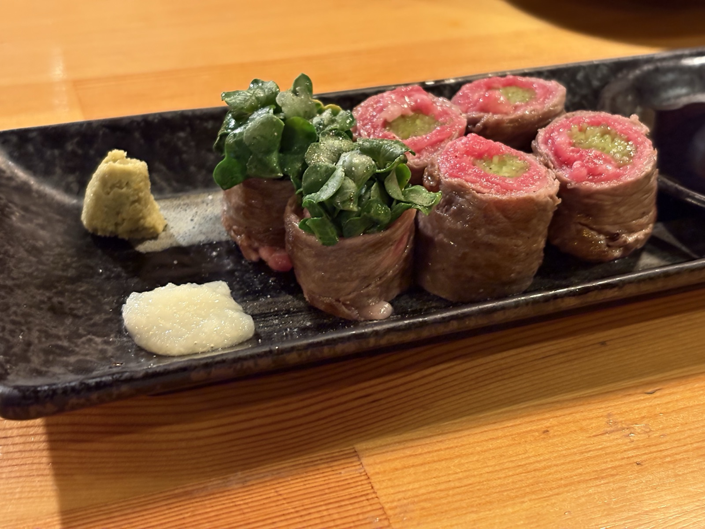
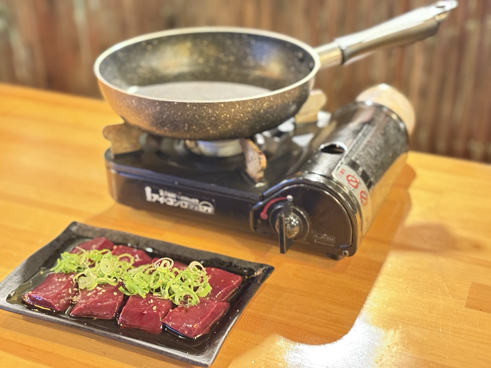
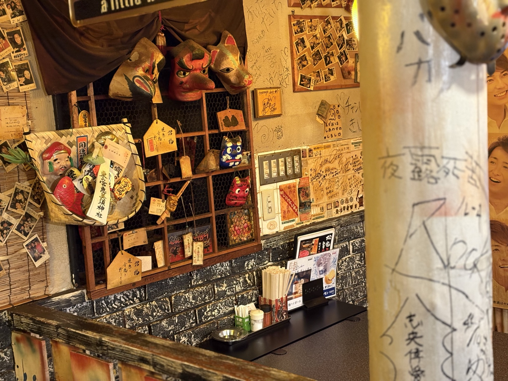
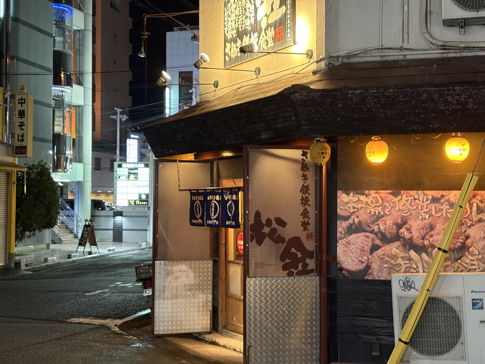

ホルモン炒め
¥800（税込 ¥880）創業以来、変わらぬ味を守り続ける一皿。 松金を語るうえで欠かせない料理です。

2003年創業
Matsukin Since 2003
和歌山市・アロチの一角で、2003年から続く鉄板焼きの店。
昭和レトロな雰囲気、気取らず過ごせる距離感。 長い間お客様に愛されてきました。

The Cook
20年以上守り続けてきた味には、理由があります。
この店の魅力は、新鮮なホルモンだけではありません。
火入れ、仕込み、
味付け。
その一つひとつに、店主のこだわりがあります。
その味を支えているのは、店主の料理への誇りです。 ひと皿を丁寧に、一手間かけ、また食べたくなる味として届ける。 その積み重ねにより、つくられています。
家族で店を切り盛りし、今日も一皿ずつ丁寧に届けています。

Unchanged Flavor
味が変わらないのは、偶然ではありません。
料理人としての誇りを持つ店主が、
この店の味を一日一日、守り続けてきたからです。
流行を追うのではなく、また食べたくなる味を守る。 創業以来変わらぬ味を、今日も同じように。 店主が大切にしてきたのは、その当たり前を続けることです。

One Dish
鉄板焼き、一品料理。
この店で愛されてきたのは、
店主が作る
一皿一皿です。
気分に合わせて頼める料理があり、 酒に合う一品があり、 最後に食べたくなる〆がある。 その幅の広さも、松金らしさです。

Dishes
新鮮なホルモンを使った料理をはじめ、松金で楽しめる豊富なメニューをご紹介します。
しっかり食べたい1軒目にも、最後にもう一皿楽しむ〆にも。 松金は、その日の使い方に合わせて立ち寄れる店です。
創業以来、変わらぬ味を守り続ける一皿。 松金を語るうえで欠かせない料理です。

肉の旨みとかいわれの香りが重なる、 常連にも選ばれてきた一品。

〆にも、もう一品にも。 松金らしい旨みが詰まった焼きそば。

松金名物やみつきスパイス香る、酒がすすむ人気の一品。

生から焼くからこその旨み。 お酒に合う一品です。

鶴橋直送のキムチ。 シャキッとした山芋の食感が楽しめる一品。

Showa Retro
どこか懐かしい。 昭和の空気が残る店内。 料理をつまみながら、 自然と会話が弾み、 気づけばもう一杯。
気取らず、落ち着ける。 料理と酒と会話が、ちょうどよく馴染む場所です。
Location
アロチの賑わいから一本路地を入ると、 自然と足を運びたくなる、そんな少し特別な場所です。
肩肘張らずに過ごせる空気で
お迎えします。


Information